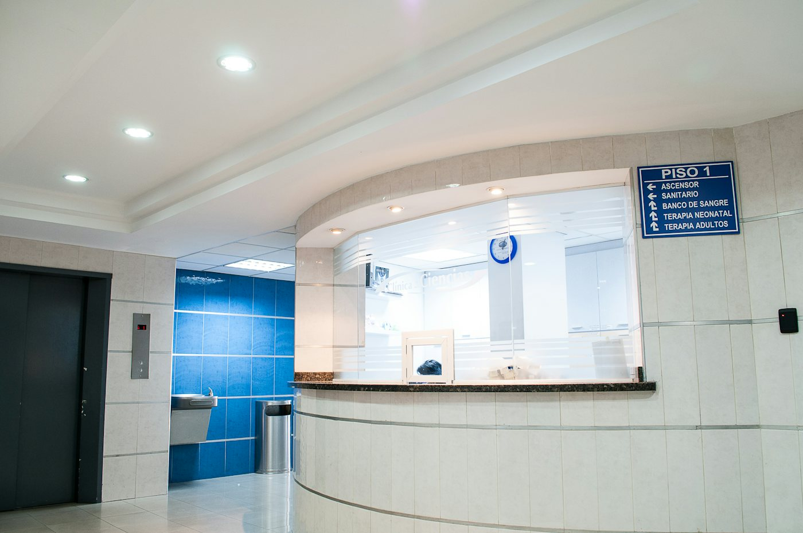
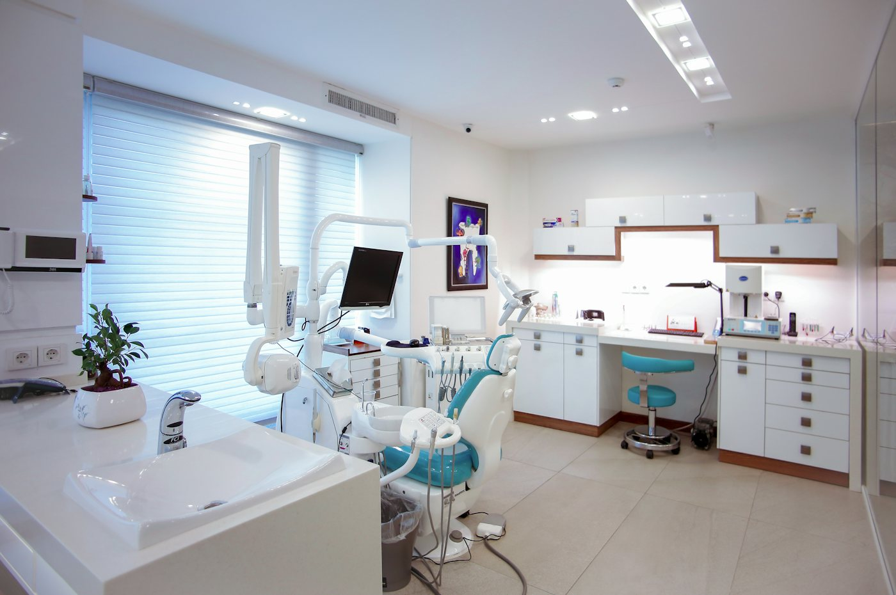

Todas as especialidades da sua família em um só endereço.
Atendimento de segunda a sábado, com horários à noite para quem trabalha e encaixe no mesmo dia para casos de dor.
Todas no mesmo endereço, com prontuário único. Você não repete sua história a cada profissional. Profissionais com especialização registrada no conselho. A direção clínica é das fundadoras.
Dra. Marina CastilhoDiretora clínica · CRO-SP 78.412


❦
Tratamentos e valores
Valores de referência para atendimento particular. Convênios aceitos: Amil, Bradesco, SulAmérica e Unimed.
Consultas
- Consulta com clínico geralR$ 180
Com retorno em até 15 dias
- Consulta com especialistaR$ 260
Dermato, ortopedia ou cardiologia
- Avaliação odontológicaR$ 150
Inclui radiografia panorâmica
- TeleconsultaR$ 120
Retornos e resultados de exames
Procedimentos
- Limpeza dental completaR$ 220
Profilaxia e aplicação de flúor
- Clareamento dentalR$ 690
Consultório e moldeira caseira
- Sessão de fisioterapiaR$ 130
50 minutos, individual
Exames
- Check-up essencialR$ 480
Consulta, sangue e eletrocardiograma
- UltrassomR$ 210
Abdome, tireoide ou articulações
- Radiografia digitalR$ 95
Laudo em até 2 horas
As informações deste site não substituem a consulta com um profissional de saúde.
Horários
| Segunda a sexta | 8h às 20h |
|---|---|
| Sábado | 8h às 14h |
Onde estamos
Alameda dos Arapanés, 1.020 — Moema, São Paulo
Atendimento de segunda a sábado, até as 20h.
Parcelamento em até 12 vezes sem juros.

Está com dor agora? Fale com a gente
Guardamos horários de encaixe todos os dias para urgências. Confirmamos pelo WhatsApp em até uma hora.